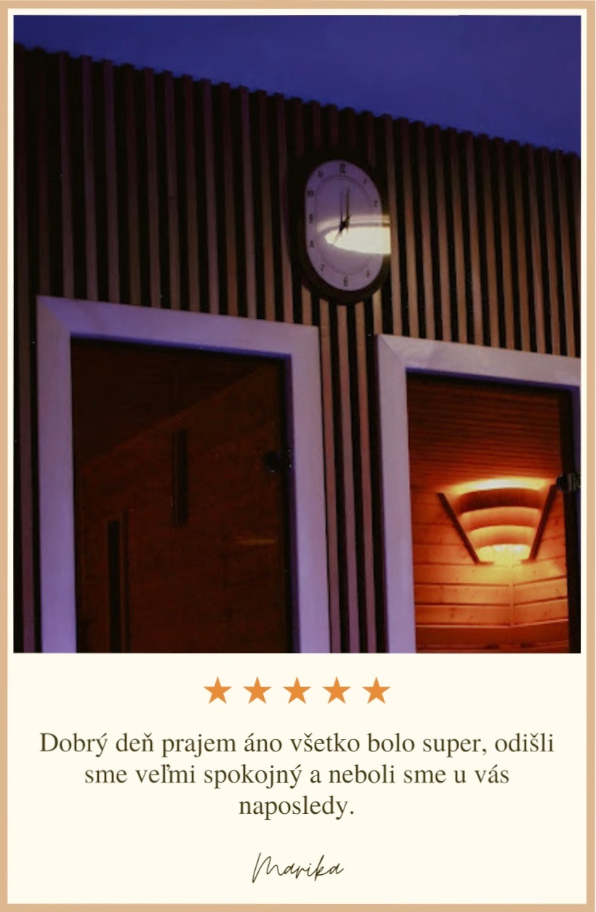
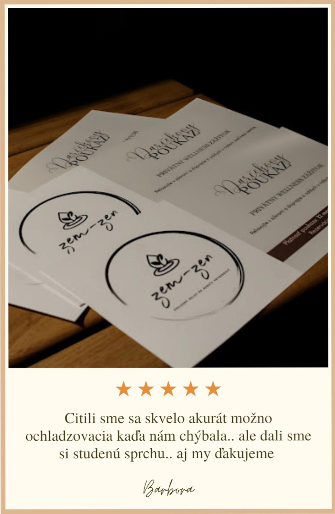

<section id="reviews">
    <h2>Recenzie</h2>
    <div class="slider">
      <div class="slides">
        
        
        
        
        
        
        
        
        
        
      </div>
    </div>
  
    <style>
      /* Add margin below the title */
      #reviews h2 {
        text-align: center;
        margin-bottom: 20px;
      }
  
      #reviews {
        display: flex;
        flex-direction: column;
        align-items: center;
        padding: 20px;
      }
  
      .slider {
        width: 100%;
        max-width: 1200px;
        height: 400px;
        overflow: hidden;
        border: 2px solid #ddd;
        box-shadow: 0 0 10px rgba(0,0,0,0.1);
        background: #fff;
        border-radius: 10px;
        margin: 0 auto;
      }
  
      .slides {
        width: 100%; /* 10 images * 100% each */
        height: 100%;
        display: flex;
        animation: slide 60s linear infinite;
      }
  
      .slides img {
        width: 100%;
        height: 100%;
        object-fit: cover;
        user-select: none;
        pointer-events: none;
      }
  
      @keyframes slide {
        0%   { transform: translateX(0%); }
        10%  { transform: translateX(-10%); }
        20%  { transform: translateX(-20%); }
        30%  { transform: translateX(-30%); }
        40%  { transform: translateX(-40%); }
        50%  { transform: translateX(-50%); }
        60%  { transform: translateX(-60%); }
        70%  { transform: translateX(-70%); }
        80%  { transform: translateX(-80%); }
        90%  { transform: translateX(-90%); }
        100% { transform: translateX(0%); }
      }
    </style>
  </section>
  